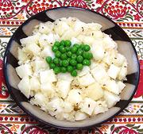

|
Potato Salad with SauerkrautCzech - Bramborový Salát s Zelím | ||||
| Serves: Effort: Sched: DoAhead: |
5 salad ** 30 min Yes |
If you would like something a little different in a potato salad, perhaps a little lighter, yet still flavorful, or perhaps one that is dairy free, this may be your solution. The sauerkraut flavor is not particularly assertive. | |||
|
2 5 5 ------ 3 1/2 1 1 ------ |
# oz oz --- T t t T --- |
Potatoes (1) Sauerkraut Onion (2) -- Dressing Oil (3) Caraway Seeds Salt Vinegar, white wine -------------- |
Make - (20 min + chill if desired)
|